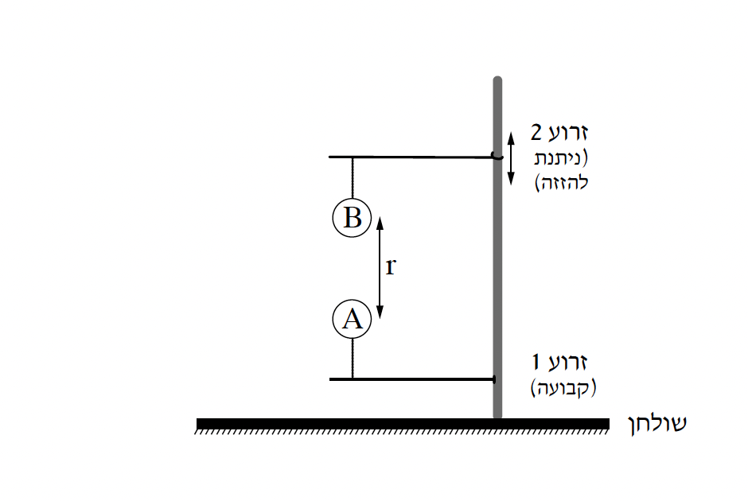

שאלה 1
תלמידים קיבלו משימה לביצוע - מעבדה בסימולציה ממוחשבת העוסקת באלקטרוסטטיקה.
בסימולציה שני כדורים קטנים A ו-B. כדור A טעון במטען q וכדור B טעון במטען זהה בגודל ומנוגד בסימן, -q.
המערכת בסימולציה נמצאת בריק.
המערכת בסימולציה מכילה מעמד מעבדתי (סטטיב) המוצב על שולחן. למעמד מחוברות שתי זרועות: זרוע 1 מקובעת במקומה
ואליה קשור בחוט מבודד כדור A, וזרוע 2 הניתנת להזזה מעלה ומטה, וממנה תלוי בחוט מבודד כדור B.
מרכזי הכדורים נמצאים על קו אנכי (ראו תרשים).

הסימולציה מציגה מדידות של:
- TB, מתיחות החוט שאליו הכדור B קשור.
- r, המרחק בין מרכזי הכדורים A ו-B.
מסתו של כל כדור היא m. הניחו שבסימולציה כמות המטען q על כל כדור קבועה והתפלגותו אחידה.
תנאי הכבידה בסימולציה זהים לאלה שעל פני כדור הארץ.
סרטטו את תרשים הכוחות הפועלים על כדור B. ליד כל כוח רשמו את שמו וציינו מי מפעיל אותו.
פתחו ביטוי של מתיחות החוט, TB, כפונקצייה של המרחק r.
השתמשו בפרמטרים m, q ובקבועים פיזיקליים, אם יש צורך.
(7 נקודות)
התלמידים שינו כמה פעמים בסימולציה את המרחק r בין מרכזי הכדורים ורשמו בהתאמה את המתיחות TB שהסימולציה מציגה.
תוצאות המדידות מופיעות בטבלה שלפניכם:
| 0.24 | 0.22 | 0.20 | 0.18 | 0.16 | r (m) |
| 0.21 | 0.25 | 0.28 | 0.33 | 0.41 | TB (N) |
התלמידים סרטטו גרף של המתיחות TB כפונקצייה של משתנה חדש שנבחר כך שהגרף יהיה ליניארי.
ב. קבעו מהו המשתנה החדש, ומה הן יחידות המידה שלו. העתיקו למחברתכם את השורה של TB מן הטבלה, הוסיפו
מתחתיה שורה חדשה, ורשמו בה את הערכים והיחידות של המשתנה החדש. (4 נקודות)
סרטטו במחברתכם דיאגרמת פיזור (נקודות במערכת הצירים) של המתיחות TB כפונקצייה של המשתנה החדש.
הוסיפו לדיאגרמת הפיזור את הישר המתאים לה ביותר (קו מגמה).
(9 נקודות)
ד. היעזרו בגרף וחשבו את גודל המטען |q| ואת המסה m של כל אחד מן הכדורים. (8 נקודות)
סימולציה זו מתוכננת כך שהמתיחות המרבית שכל חוט יכול לשאת בלי להיקרע היא Tmax.
התלמידים קירבו באיטיות את כדור B לעבר כדור A עד אשר לפחות אחד מן החוטים נקרע.
ה. קבעו מה קרה: החוט הקשור לכדור A נקרע ראשון, החוט הקשור לכדור B נקרע ראשון או שני החוטים נקרעו
באותו הזמן. נמקו את קביעתכם. (5.33 נקודות)